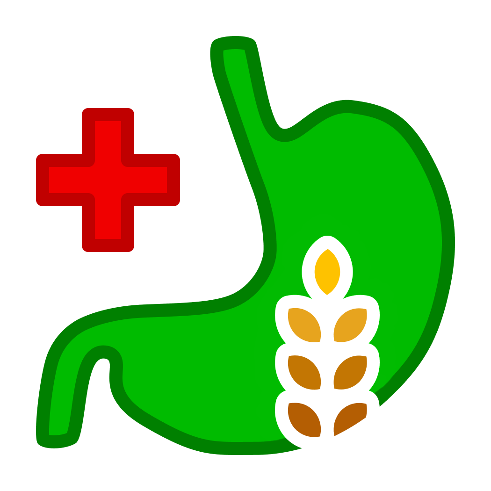

<nav class="navbar navbar-expand-sm bg-success-subtle fixed-top py-3">
  <div class="container-fluid px-4">
    <a class="navbar-brand fw-medium" href="/">
      
      Celiac Detection
    </a>

    <button class="navbar-toggler btn btn-outline-success" type="button" data-bs-toggle="collapse" data-bs-target="#navbarContent" aria-controls="navbarContent" aria-expanded="false" aria-label="Toggle navigation">
      <span class="navbar-toggler-icon"></span>
    </button>

    <div class="collapse navbar-collapse" id="navbarContent">
      <ul class="navbar-nav me-auto mb-lg-0">
        <li class="nav-item">
          <a class="nav-link" href="/">Home</a>
        </li>
        <li class="nav-item">
          <a class="nav-link" href="/predict">Detect</a>
        </li>
        <li class="nav-item">
          <a class="nav-link" href="/about">About</a>
        </li>
      </ul>
    </div>
  </div>
</nav>